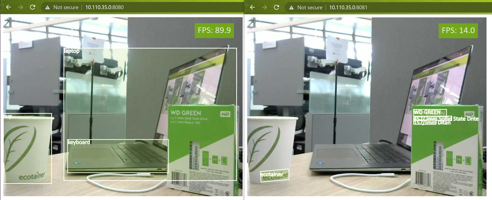

Run multiple containers at once
This tutorial details how to run multiple JetNet containers asynchronously with a single webcam as a shared input.

Step 1 - Setup a V4L2 loopback device (virtual camera)
To share a webcam across multiple containers, set up a v4l2loopback device. First, install some dependencies
Check which camera devices are currently on the system.
Create a v4l2loopback device with an unused device ID. We'll assume device ID 10 is unused.
You should find /dev/video10 got created. You can verify this again by calling v4l2-ctl --list-devices.
Step 2 - Link the real camera to the loopback device
In one terminal, use ffmpeg to stream the real camera device (which we'll assume is /dev/video0) to the virtual camera we created /dev/video10
This will keep running, so leave this terminal open.
Step 3 - Run an object detection container on the loopback camera
In a new terminal, and launch the first container for object detection. We'll assume the working directory is the root of the cloned jetnet repository.
sudo docker run \
--network host \
--gpus all \
--runtime nvidia \
-it \
--rm \
--name=jetnet1 \
-v $(pwd):/jetnet \
--device /dev/video10 \
-v /tmp/.X11-unix:/tmp/.X11-unix \
-e DISPLAY=$DISPLAY \
jaybdub/jetnet:l4t-35.1.0 \
/bin/bash -c "cd /jetnet && python3 setup.py develop && jetnet demo --port 8080 --camera_device 10 jetnet.yolox.YOLOX_NANO_TRT_FP16"
Open a web browser and access http://<IP_ADDRESS>:8080.
If you are using the same Jetson to run the web browser, it is
http://0.0.0.0:8080
Step 4 - Run a text detection container on the original camera
In another new terminal, and launch the second container for text detection. Notice that we use a different port.
sudo docker run \
--network host \
--gpus all \
--runtime nvidia \
-it \
--rm \
--name=jetnet2 \
-v $(pwd):/jetnet \
--device /dev/video10 \
-v /tmp/.X11-unix:/tmp/.X11-unix \
-e DISPLAY=$DISPLAY \
jaybdub/jetnet:l4t-35.1.0 \
/bin/bash -c "cd /jetnet && python3 setup.py develop && jetnet demo --port 8081 --camera_device 10 jetnet.easyocr.EASYOCR_EN_TRT_FP16"
Open a web browser and access http://<IP_ADDRESS>:8081.
If you are using the same Jetson to run the web browser, it is
http://0.0.0.0:8081
Result
Once both containers are open, you should be able to view the outputs in separate browser tabs like this.
That's all for this tutorial! If you run into any issues, feel free to open an issue on GitHub.